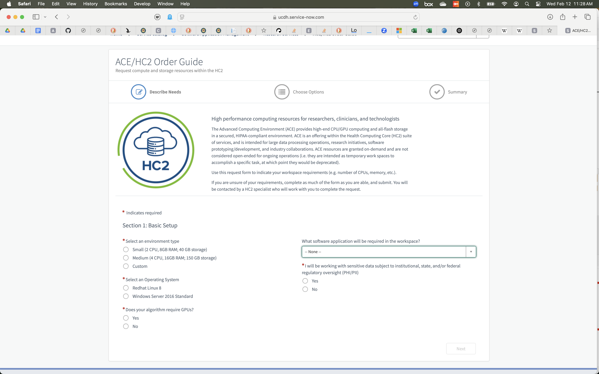
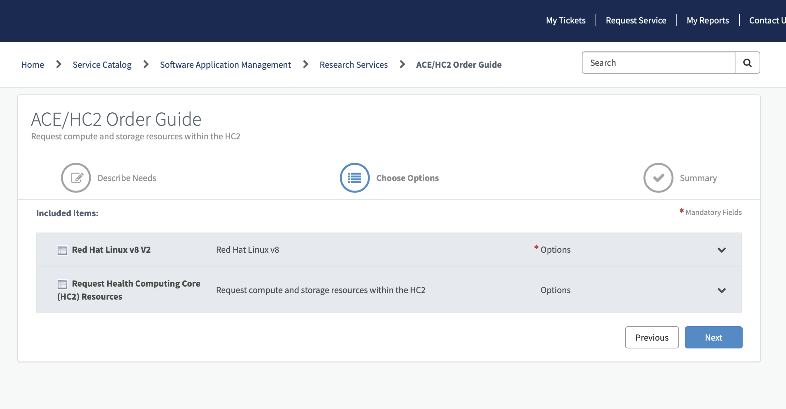
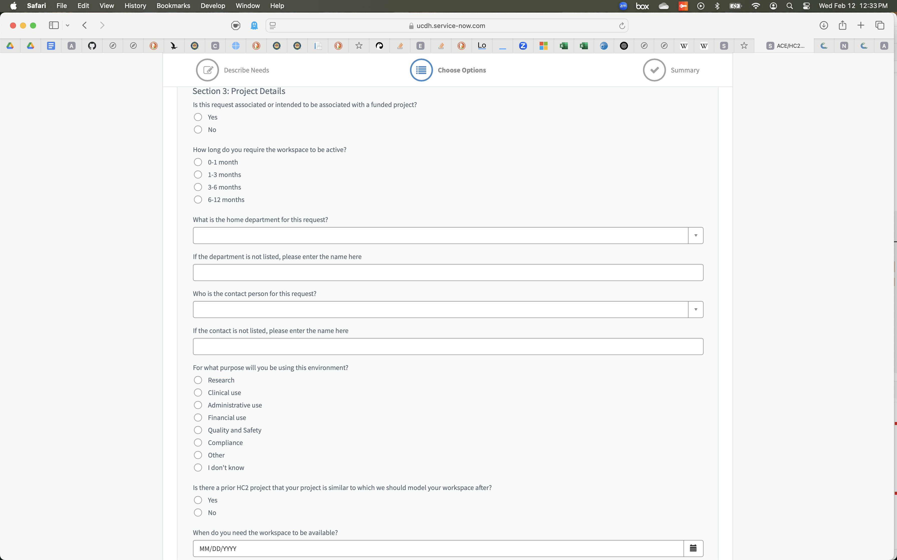

Advanced Compute Environment#
UCDH has set up a powerful on-site compute environment called ACE because researchers often require significant computational resources and medical data generally cannot leave the hospital’s servers. ACE is a system that lets researchers request a virtual machine (VM) with the necessary resources for a project. VMs on ACE are provided for a limited duration (up to a year, according to the request form), then returned to the pool of resources. As such, they are useful for computation but should not be used for long-term data storage.
Requesting an ACE VM#
Requesting an ACE VM is done through Service Now. Search for the “ACE/HC2 Order Guide” and you’ll end up at the form seen in the screenshot below. This is the irst of three screens where you will specfiy the computer resources required for your VM request. We will explain the options below
Page One: Basic Setup#
The screenshot shows the first page of the form used to request an ACE VM. The selections are explained below the image.

Size The small and medium options are well-explained on the request screen. If you select “custom”, you’ll have to expain what you want in a free-text entry box when you submit your order.
Operating System The listed choices are Windows and Red Hat Linux. You can get a different Linux ditribution (e.g. Ubuntu) by selecting Red Hat and then making a specific request in the free-text entry box when you submit your order.
Do You Require a GPU? Only select yes if you are specifically going to implement a machine learning model in a way that takes advantage of a GPU.
GUI or Command Line Strangely, the dropdown menu labeled “What software application will be required in the workspace?” is really about deciding whether you want a graphical user interface (GUI) or a command line interface (CLI). For a GUI, select Anaconda from the dropdown menu and for a CLI, select Miniconda or “None”. You can use whatever environment manager software you wish on ACE – pixi is Wes and Nick’s current favorite.
Will The VM Be Used For Sensitive Data? Select “Yes” if you will use the virtual machine or analysis of data that may be protected or personally identifiable. This certainly is the case if patient names, addresses, or birthdates are anywhere in the data, but there are less obvious kinds of personal or protected data. Don’t consider this guide to be a reference or what constitutes personally-identifiable information or protected health information. Instead, refer to your training on biomediucal research rules and ethics. If you haven’t yet had that training, see the chapter on CITI Training for Handling Protected Information to learn how to access it.
Page Two: Options#
After you click “Next” on the Basic Setup page, you’ll be prompted to request options for your VM. The screenshot below shows the interface for entering options, assuming you .

The selections are explained below the image.
Size This should be automatically populated with the selection you entered on the first page.
Environment
Page Three: Project Details#
The screenshot shows the third page of the form used to request an ACE VM. The selections are explained below the image.

t
Once a new ACE VM is added to your cart, you can check out to submit a request for provisioning the new VM.
Connecting#
Beore you can connect to your new VM, someone in UCDH IT must create it and then contact you with login inoformation. As of now, that person is generally Chris Lambertus. You will get an email from him with a username and password to use for your connection (the username may match your UC Davis identity but the password will deinitely not.)
Connect to ACE#
Note
In order to connect to the ACE VM, you must be on the UCDH VPN (see VPN Access)
Now you are ready to connect to your ACE VM. If you requested a Windows VM with a desktop, then you will use Microsoft Remote Desktop to connect. I tend to request a Linux VM with no graphical interface, so I connect via SSH. In either case, the address to connect to is the numerical IP that will have been sent to you by Chris Lambertus in response to your ServiceNow request. He will have also sent a password via an encrypted email (you’ll need to follow a link in that email to a web interface where the password can be decrypted.) Once you’ve logged in, I recommend adding you work computer’s SSH public key to the file ~/.ssh/authorized_keys on the VM. That way you won’t have to enter the password each time you want to connect. (See Datalab’s workshop Introduction to Remote Computing)
Storing Data#
You will have a small amount of drive space in your \home space on the ACE VM (generally 20GB, shared between all the users with accounts on this VM). Data storage should use the /data directory – you’ll be provisioned with a folder at /data/<machine-name>, where <machine-name> is a placeholder for the VM’s name (something like hsrpn01int18.) If you’re using an environment manager like Pixi (hight recommended, by the way!) it will need to install large software packages that can quickly fill your allotted space in the /home directory. The solution is to establish your working directory in the /data directory. Just remember to navigate to that directory each time you resume work on your UCDH project!